История Викторианской Англии
Главная
Регистрация/Войти
Избранные статьи
История
Аристократия
Промышленное развитие
Рабочий класс
Семья
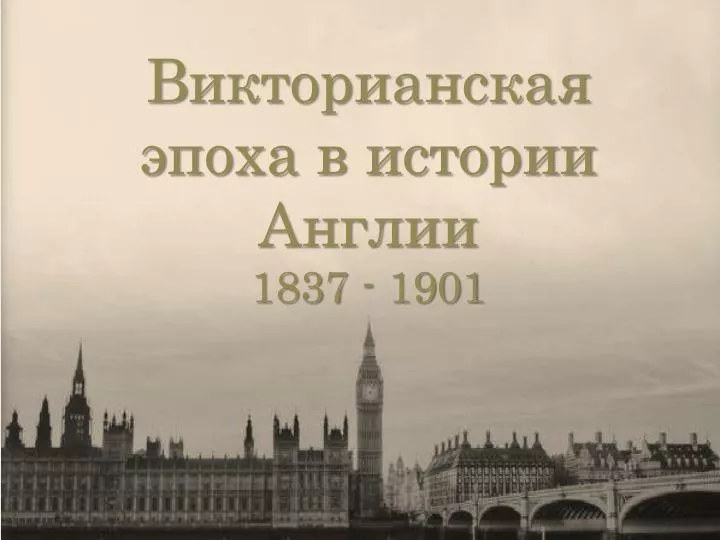
Новые публикации и издания
Сомова Е.В.,Маслова М.А. Жанр "истории" в английской литературе XIX века
Брискина А.А.Концепция истории в викторианскую эпоху
Кычанова Л.С., Оболонкова М.А.Викторианский "home" как отражение британского менталитета
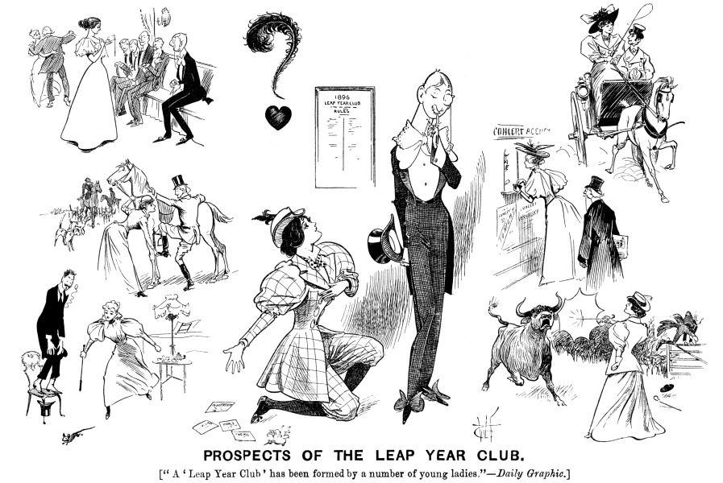 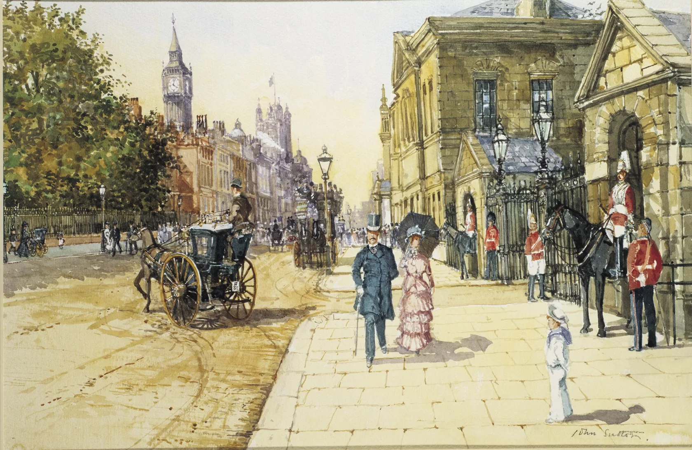
 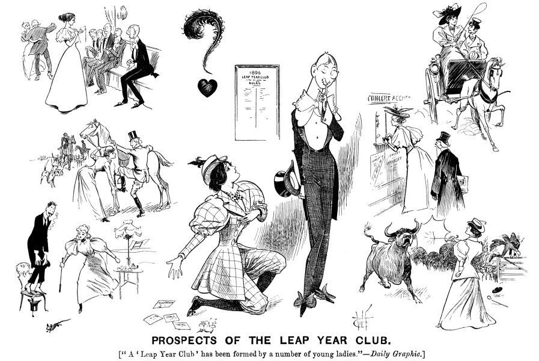
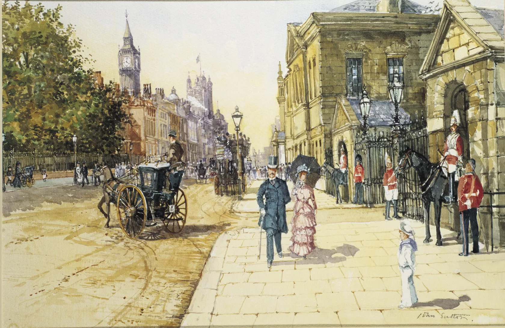
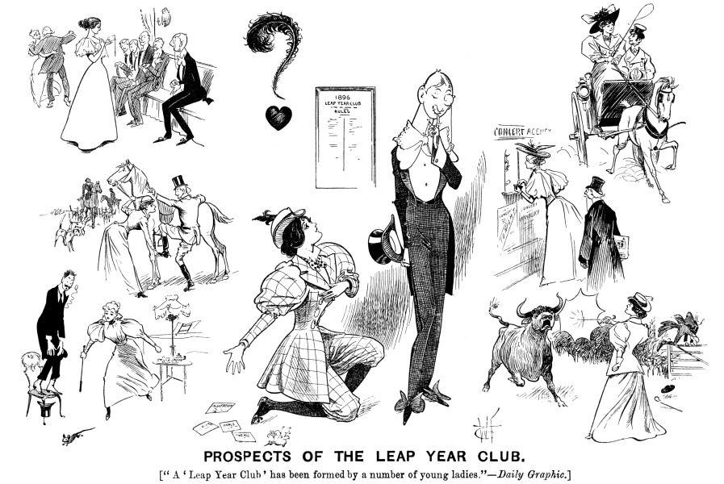
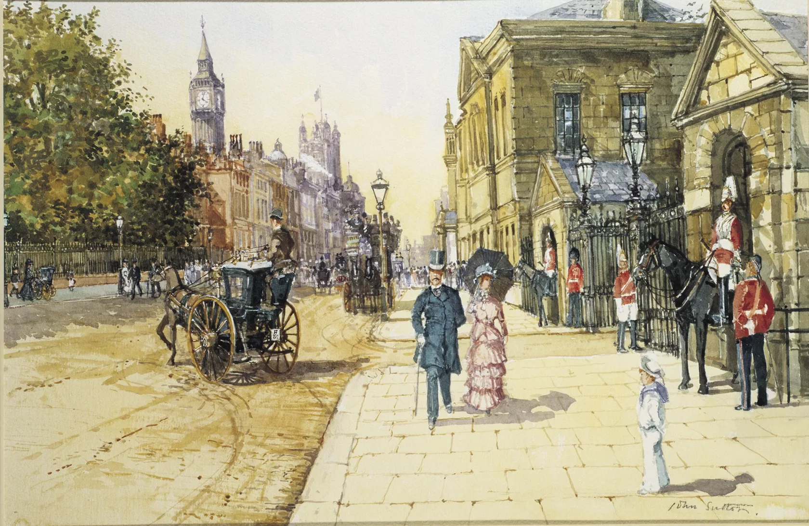
 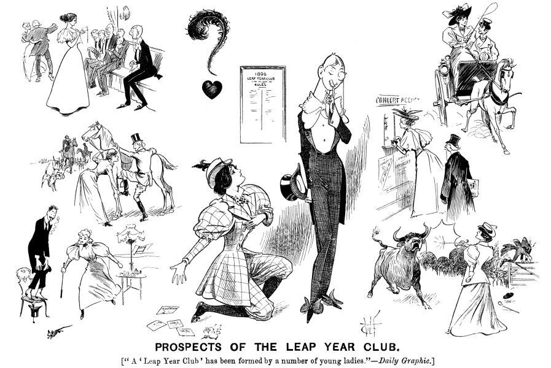
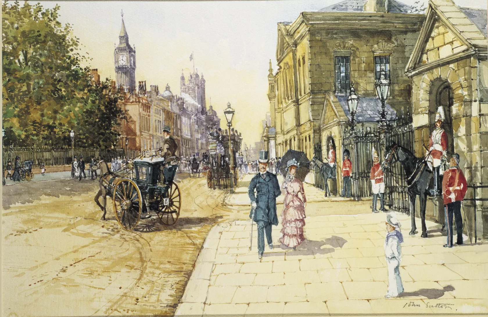
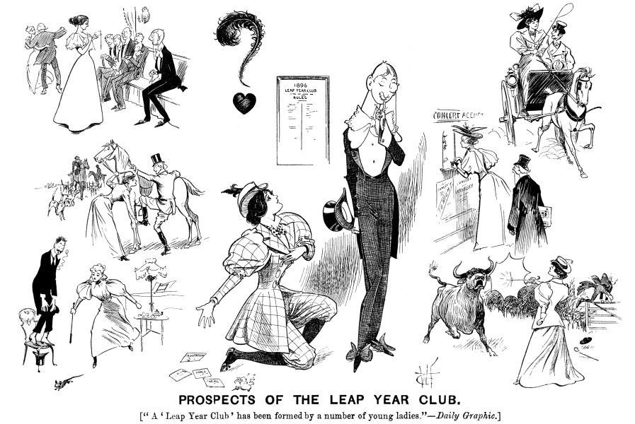
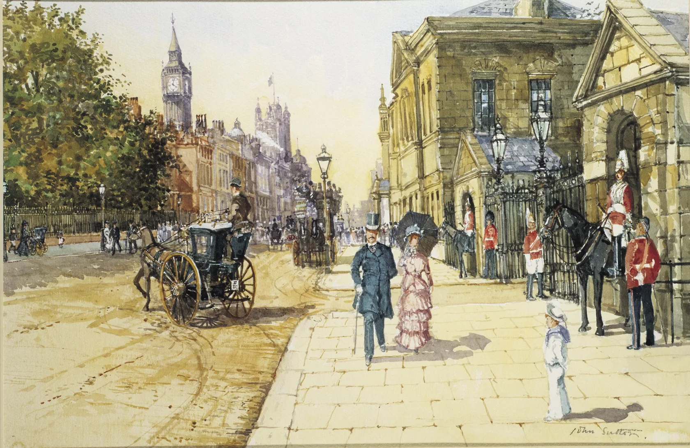